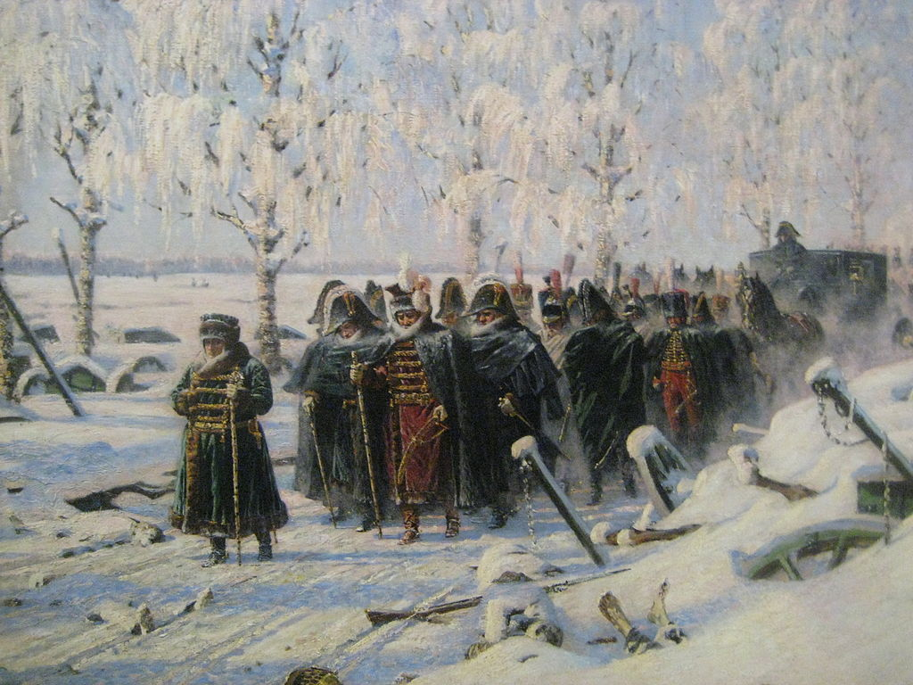
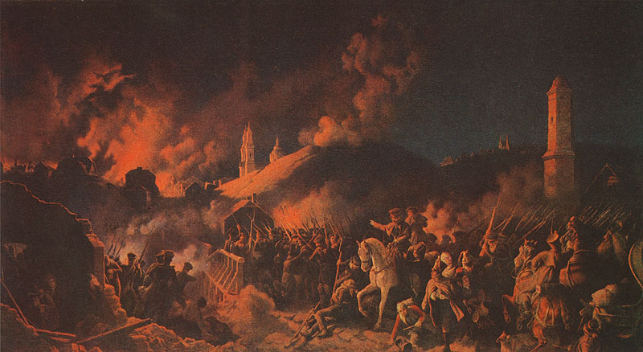
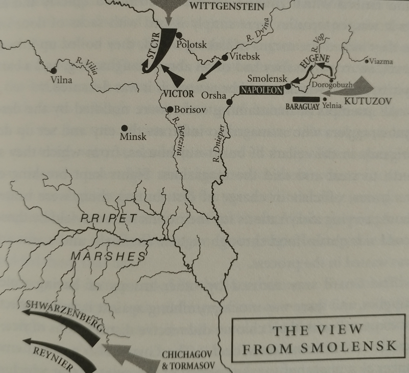
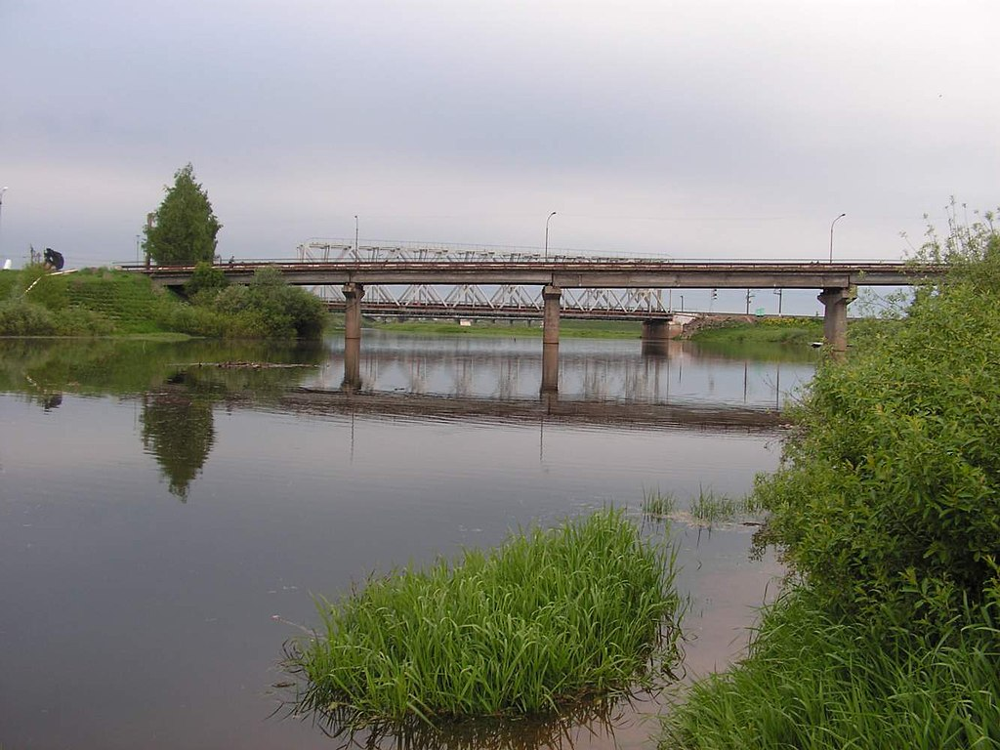
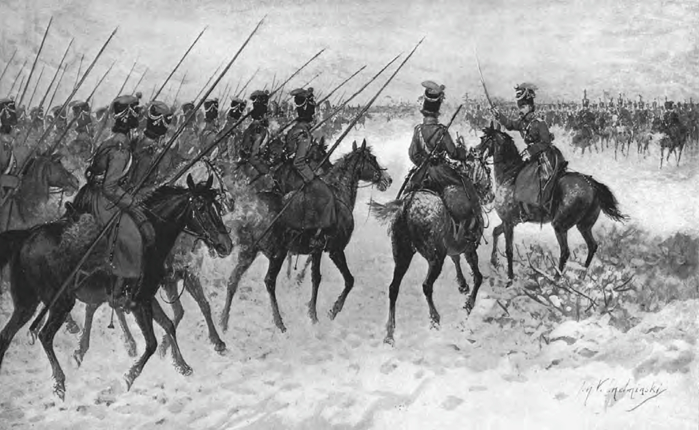

꿈의 도시 스몰렌스크 - 그리고 현실
게시: 2021-08-02T06:30:19+09:00
11월 6일 급습해온 동장군의 위력 앞에서는 나폴레옹도 한낱 뚱뚱한 프랑스 아저씨에 불과했습니다. 여태까지 '러시아의 추위가 무시무시하다더니 프랑스와 하나도 다를 바 없는 날씨 아닌가?' 라고 주변 사람들에게 반복해서 떠들었던 것도 어쩌면 러시아의 추위에는 정말 답이 없었고 또 정말 두려워했기 때문에 스스로에게 자기 최면을 거는 행위였는지도 모르겠습니다. 나폴레옹의 그런 입방정은 11월 6일 이후 즉각 고쳐졌고, 추위를 견디지 못한 그는 자신의 트레이드 마크나 다름없는 회색 프록코트와 삼각모(tricorn)를 포기하고 두툼한 털로 안을 댄 폴란드식 초록색 외투와 군고구마 장수 같은 방한모를 뒤집어 써야 했습니다.

(두꺼운 외투를 입고 걸어서 후퇴하는 나폴레옹을 그린 Vasily Vereshchagin라는 러시아 화가의 그림입니다. 물론 상상화지요. 실제로 나폴레옹도 11월 6일 이후에는 너무나 추웠기 때문에 자주 마차에서 내려 발을 동동 구르며 걸어야 했다고 합니다.) 나폴레옹이나 그의 부하들이나 이 강추위 속에서 포기하지 않고 계속 걸을 수 있었던 이유는 딱 하나, 며칠만 더 걸으면 물자가 쌓여있고 따뜻한 쉼터가 준비된 겨울 숙영지 스몰렌스크에 도착할 수 있다는 희망이었습니다. 나폴레옹은 11월 5일에 도로고부즈(Dorogobuzh)에 도착했는데, 여기는 스몰렌스크로부터 불과 96km 떨어진 곳이었습니다. 당시 군대가 강행군을 하다면 하루에 50km를 걷기도 했지만 당시 기동력으로 유명했던 프랑스군도 실전에서는 하루 행군거리는 25km 정도에 불과했습니다. 그리고 나폴레옹은 정말 하루에 25km씩 걸어서 스몰렌스크에 11월 9일 입성할 수 있었습니다. 이것만 보면 나폴레옹의 군대가 눈 쌓인 미끄러운 길과 마필 부족, 추위와 굶주림에도 불구하고 하루 25km라는 북부 이탈리아에서나 낼 수 있는 속도를 여전히 유지한 것으로 보입니다. 그러나 그건 사실이 아니었습니다. 당시 나폴레옹과 함께 스몰렌스크에 입성한 것은 상대적으로 보급과 장비 등이 원활했던 근위대였기 때문에 그런 행군 속도가 가능했던 것이고, 나머지 부대들은 훨씬 느린 속도로 조금씩 스몰렌스크로 기어오고 있었으며, 그들 뒤에는 수많은 낙오병 무리가 끈질기게 붙어서 따라오고 있었습니다. 나폴레옹은 스몰렌스크에 입성하자마자 즉각 여기서 겨울을 나기 위한 병력 배치를 구상하며 명령서들을 구술하기 시작했습니다. 그러나 다 부질없는 짓이었습니다. 나폴레옹의 기대와는 달리 스몰렌스크에 축적된 식량이 턱없이 부족했기 때문이었습니다. 원래 나폴레옹은 겨울 숙영지 후보 도시 중 하나로 스몰렌스크를 지목하고 여기에 전체 그랑다르메가 겨우내 먹을 식량을 쌓아두라고 지시했습니다. 그런 지시로 인해 상관들의 닥달을 받은 보급관 중 하나가 바로 젊은 시절의 스탕달이었습니다. 스탕달은 당시 상황에 대해 '저들은 불가능한 것을 요구하고 있다'라며 불만을 표시했는데, 그건 정당한 불만이었습니다. 당시 다른 전장에서였다면 보급관들은 늘 하는 것처럼 수표책과 일꾼들을 끌고 인근 마을을 쏘다니며 식량과 수레, 말과 솥단지 등을 징발하고 그 대가로 평화조약이 맺어질 때 헐값에 정산될 영수증을 써주었을 것입니다. 그러나 여기는 황량하고 드넓은 러시아라서 가뜩이나 사람과 마을을 찾기가 힘들었는데, 그나마 러시아군이 철수하면서 인근 마을을 다 불태우는 청야 전술을 썼기 때문에 더욱 긁어모을 식량을 구하기가 어려웠습니다. 특히 스몰렌스크는 우크라이나나 리투아니아가 아닌 진짜 러시아 영토의 첫관문인 요새 도시로서 인구가 많지도 않았고 특히 8월 중순의 스몰렌스크 전투에서 완전히 불타버렸기 때문에 스몰렌스크에 가옥과 창고를 재건하는 것만도 무척 힘든 일이었습니다. 그나마 폴란드로부터 조금씩이나마 보급품이 들어오고 있었던 것이 도움이 되었습니다. 그러나 그 지역에 아직도 남아있던 프랑스군 부상병들, 그리고 스몰렌스크 인근에 배치된 빅토르의 제9군단도 먹어야 했는데, 이들이 아무리 사방을 돌아다니며 뒤져도 정말 먹을 것이 나올 곳이 없었기 때문에 결국 이들도 별로 충분치 않은 겨울용 비축 식량에 손을 댈 수 밖에 없었습니다. 상황이 이렇다보니 여기서 겨울을 나기는 커녕 곧 쏟아져 들어올 그랑다르메의 본진이 불과 며칠 먹을 것도 부족한 상황이었습니다. 정확하지는 않지만 대략 1개 사단이 겨우내 먹을 정도였다고 합니다. 게다가 더 나빴던 것은 나폴레옹의 본진보다도 이름에 맞지 않게 알단의 낙오병들이 먼저 스몰렌스크에 우르르 입성하여 식량 창고를 함부로 털었다는 점이었습니다. 나폴레옹은 분통이 터졌지만 방법이 없었습니다. 그를 더욱 분노하게 만든 것은 근위대의 뒤를 이어 속속 입성하는 나머지 그랑다르메의 꼬락서니였습니다. 자신의 옷차람도 엉망인 상황에서 병사들의 복장 상태가 불량했기 때문이 아니었습니다. 나폴레옹의 주위를 둘러싼 근위병들은 굳건한 편이었지만, 거의 절반에 가까운 병사들이 부대를 이탈한 낙오병이 되어 있었고 그나마 대오를 지키고 있는 병사들 중 상당수가 무기를 버린 상태였기 때문이었습니다. 나폴레옹은 화를 내며 스몰렌스크 성문에 근위대를 배치하고 무기를 소지하지 않은 병사들과 부대를 이루지 못한 낙오병들은 스몰렌스크 성문 안으로 들어오지 못하게 했습니다. 이 조치는 근위대를 제외한 그랑다르메 병사들에게 큰 분노와 곤혹스러움을 안겨주었습니다. 평상시에도 모든 면에서 더 대우가 좋았지만 정작 전투에는 잘 참전하지 않는 근위대를 부러워하면서도 질시했던 일반 군단병들이 보기에, 근위대는 제일 먼저 스몰렌스크에 들어와서 제일 먼저 식량 창고를 장악하고는 자기들만 배를 불리며 다른 군단병들에게는 식량 나눠주기를 거부하고 있는 욕심꾸러기였습니다. 그런데 이젠 아예 성문 안으로도 못 들어오게 한다? 스몰렌스크 성벽 밖에도 마을 비슷한 것이 있었지만 이미 다 파괴된 폐허에 불과했고, 거기서 차가운 북풍을 맞으며 노숙하게 하는 것은 너무나 가혹한 처사였습니다. 어떻게든 스몰렌스크에 입성할 수 있었던 군단병들에게도 근위대는 불만의 대상이었습니다. 이들이 성내에 들어와보니 그나마 쓸만한 건물은 근위대가 다 차지하고 있었고, 나머지 건물들은 불에 탄 잔해에 불과했습니다. 그런 상황에서도 근위대 병사들은 자신들이 주인이 된 시장을 열고 모스크바에서 가져온 약탈품을 다른 병사들과 민간인 군속들에게 팔고 있었습니다. 그 중 눈에 띄는 것은 화려한 모로코 가죽으로 장식된 서적 양장본 전집도 매물 중에 있었다는 것입니다. 책은 원래 굉장히 무거운 물건인데, 그 고생길 속에서도 그런 전집류를 들고와서 팔 정도로 일부 개인들은 운송 사정이 괜찮았다는 뜻이고, 그만큼 그랑다르메 내부의 효율적인 자원 배분이 안되고 있었다는 뜻이기도 했습니다. 당연히 그 전집류는 아무도 사지 않았다고 합니다. 성문 안에서는 이렇게 시장이 들어서는 마당에, 성문 밖에서는 추위 속에서 살아남기 위한 온갖 노력이 벌어지고 있었습니다. 일부 낙오병들은 장교들을 중심으로 자기들끼리 대오를 편성해서 하나의 온전한 부대로 인정받고 성문 안에 들어가기도 했습니다. 어쩌면 나폴레옹이 노렸던 것도 그런 것이었을지도 모르지요. 어쨌거나 다시 부대 편성이 이루어졌으니까요. 그런데 가장 딱하게 된 것은 바로 외젠의 제4군단이었습니다. 이들은 나폴레옹의 명에 따라 도로고부즈(Dorogobuzh)에서 본대와 떨어져 비텝스크로 향했는데, 거기 사정이 좋지 않았던 것입니다. 나폴레옹이 원래 겨울 숙영지로 생각하고 식량 비축을 지시해놓은 곳은 크게 4곳, 스몰렌스크와 비텝스크(Vitebsk), 그리고 민스크(Minsk)와 빌나(Vilna)였습니다. 민스크는 멀리 남쪽, 그리고 빌나는 사실상 폴란드와의 접경 지대였고, 그나마 스몰렌스크 근처에 있던 것이 비텝스크였습니다. 여기에는 나폴레옹이 1개 군단 정도가 겨울을 날 수 있도록 약간의 식량을 비축하고 그걸 지키기 위해 소수의 수비대를 두었습니다. 나폴레옹은 이제 숫자가 1만 정도로 줄어든 외젠의 제4군단이 거기서 겨울을 나도록 지시한 것입니다. 그런데 거기에도 사단이 벌어졌습니다.

(10월 18일~20일 사이에 벌어진 제2차 폴로츠크 전투입니다. 드넓은 국토와 많은 인구를 가진 러시아의 저력은 결국 병력이 끊임없이 보충될 수 있다는 점에 있습니다. 처음에는 침략군이 승승장구하더라도 내륙으로 진격할 수록 침략군은 전투 손실에 더해 군데군데 요충지 수비를 위해 병력을 분산시킬 수 밖에 없고 보급선도 늘어질 수 밖에 없습니다. 그러나 러시아군은 비록 미숙한 병사들이라고 해도 후방에서 장정들을 징집하여 마구 투입할 수 있으니 유리할 수 밖에 없지요. 8월 중순의 제1차 폴로츠크 전투에서는 프랑스군 3만2천이 러시아군 2만과 싸웠으나, 제2차 폴로츠크 전투에서는 프랑스군 2만7천이 러시아군 3만2천과 싸웠습니다.)

(생 시르입니다. 생 시르는 피혁공의 아들로 태어나 출세한 전형적인 프랑스 혁명의 인물입니다. 나폴레옹보다 5세 연상이었던 그는 출세가 늦은 편이었으나 대기만성형으로서 1813년의 방어전에서 혁혁한 공을 세워 나폴레옹으로부터 '방어전에 있어서는 나 나폴레옹과도 어깨를 나란히 한다'라는 극찬을 받으며 원수봉을 받습니다. 그는 그렇게 꿈에도 그리던 원수 승진을 한 날도 와이프에게 편지를 보낼 때 '아 참, 오늘 원수로 승진했소'라고 한줄만 적었다고 합니다. 그는 의리도 굳은 사내라서 백일천하 이후 네 원수가 처벌될 위기에 처하자 그를 구하기 위해 온갖 애를 다 썼으며, 그 이후에도 프랑스군이 부르봉 왕가의 사병이 아니라 프랑스 국민군이 되도록 많은 노력을 기울였습니다.) 원래 제1차 폴로츠크(Polotsk) 전투에서 제6군단을 지휘한 생시르(Laurent de Gouvion Saint-Cyr)는 상트 페체르부르그로 향하는 길목을 지키는 비트겐슈타인의 러시아군과 무승부를 냈으나, 10월 18~20일 사이에 벌어진 제2차 폴로츠크 전투에서는 증강된 러시아군의 수적 우세에 견디지 못하고 서쪽으로 후퇴할 수 밖에 없었습니다. 비텝스크는 폴로츠크의 남동쪽에 위치한 곳이었으니 당연히 당장 러시아군에게 떨어지고 말았습니다. 이건 사실 식량 창고를 털렸다는 정도에서 그치는 문제가 아니라, 북쪽에서 비트겐슈타인의 러시아군이 스몰렌스크 후방으로 치고 내려올 것이 걱정되는 심각한 문제였습니다. 그런데 외젠은 비텝스크까지 가보지도 못하고 참극을 겪게 됩니다.

(당시 러시아군과 그랑다르메를 둘러싼 큰 그림입니다. 상황이 오르샤에서 끝날 것으로 보이지 않지요? 역시 Adam Zamoyski의 책에 나온 지도입니다.)
대부분이 이탈리아 병사들로 구성된 외젠의 제4군단은 비텝스크로 향하다가, 보프(Vop) 강이라는 작은 강을 건너게 되었습니다. 여기는 아직 추위가 어정쩡해서, 강이 두껍게 얼지 않았기 때문에 먼저 공병대가 가교를 놓았습니다. 그러나 고질적인 말 부족으로 인해 동원할 수 있는 자재와 장비에 한계가 있었던 것이 문제였습니다. 공병대가 만든 가교는 일부 부대만 건넌 상태에서 그만 붕괴되고 말았습니다. 결국 외젠은 여울목을 찾아 걸어서 이 강을 건너기로 했고, 작은 보프 강에서는 쉽게 어른 가슴까지 정도 깊이의 여울목을 찾아서 건너기 시작했습니다. 그런데 설상가상으로, 등 뒤 언덕에 플라토프(Plattov)의 코삭 부대가 나타났습니다. 이쪽은 아직 1만명 정도 규모의 군단이었으므로 코삭 부대는 감히 근접전을 시도하지는 못했으나, 대신 언덕 위에 포가를 방열하고 대포알을 날리기 시작했습니다. 제4군단이 정상적인 상태였다면 대응 방법이야 많았습니다. 이쪽도 대포로 반격을 할 수도 있었고, 기병들을 보내 적 포병을 쫓아버릴 수도 있었습니다. 그러나 말들이 부족한 상황에서는 모든 것이 여의치 않았습니다. 일단은 보프 강을 건너 후퇴하는 것이 먼저라고 판단한 외젠은 먼저 포병대가 여울목을 통해 강을 건너도록 했습니다. 이건 나름 영리한 판단이었습니다. 마지막으로 보병들이 먼저 도강한 뒤 포병대가 강을 건넌다면 막판에 포병대가 강을 건널 때 코삭 기병대가 우르르 몰려와 포병대를 제압할 가능성이 있었기 때문이었습니다. 그래서 먼저 포병대가 강을 건넌 뒤, 강 서쪽 강변에 대포를 방열하고 대응 사격을 시작하면 그 엄호 하에 보병들도 강을 건널 계획이었지요.

(스몰렌스크 인근을 흐르는 보프(Vop) 강입니다. 드네프르 강으로 흘러들어가는 지류이고, 그렇게 넓거나 깊어보이지는 않습니다.)

(코삭 기병들을 그린 그림입니다만, 여기서는 꽤 멋진 군복과 군모를 쓴 모습으로 그려졌습니다. 실제로는 다들 고향에서 입던 복장 그대로였기 때문에 군복 차림도 아니었고 무척 지저분한 모습이었다고 합니다.) 그런데 이탈리아군에게 마가 끼었는지, 그렇게 처음 강을 건너던 포병대의 탄약차(caisson) 하나가 강바닥에서 미끄러져 전복되는 사고가 벌어졌습니다. 당연히 그 뒤를 바싹 따르던 포가들도 발이 묶이면서 뒤엉켜버렸습니다. 한참 코삭 포병대의 포탄이 날아오고 있는 상황에서 빨리 강을 건너야 하는 입장이었던 포병대원들은 당황하여 그 병목을 우회하고자 무리하여 수레를 몰았으나, 그만 깊은 강바닥에 대포와 수레를 처박는 결과를 낳을 뿐이었습니다. 결국 여울목은 말과 마차와 대포 등이 뒤엉킨 난장판이 되었고, 당황한 병사들도 그 여울목에 뛰어들었다가 상당수가 얼음처럼 차가운 강물 속에서 익사하거나 저체온증으로 목숨을 잃었습니다. 무사히 건넌 병사들 중에서도 상당수가 차가운 물에 흠뻑 젖고 지친 상태로 그날 밤을 넘기지 못하고 얼어 죽었습니다. 여기서 제4군단은 잔존병력의 1/4을 상실하고 맙니다. 더욱 나쁜 것은 많은 병사들이 그 와중에 머스켓 소총을 잃었고, 무려 58문의 대포를 상실했다는 점이었습니다. 외젠은 12문의 대포를 간신히 건질 수 있었으나, 군단 전체의 예비 탄약과 식량을 거의 모두 잃었습니다. 무기도, 식량도, 짐도 없는 군단은 그냥 거지떼에 불과했습니다. 외젠은 러시아군이 장악한 비텝스크를 감히 넘보지 못하고 고생하는 부하들을 이끌고 스몰렌스크로 향했습니다. 고생 끝에 스몰렌스크에 도착해보니, 근위대의 성문 보초병들이 외젠의 제4군단 전체를 낙오병으로 간주하고 입성을 허락하지 않았습니다. 분노한 외젠 이하 제4군단 장군들이 성문 보초병들을 윽박지르고 협박하고 사정사정한 끝에 한참 뒤에야 제4군단의 이탈리아 병사들은 간신히 스몰렌스크 성안에 들어갈 수 있었습니다. 그러나 이들에게도 풍족하게 주어진 것은 먹을 것과 따뜻한 잠자리가 아니라 군수품 창고에 보관되어 있던 새 머스켓 소총과 역시 겁먹고 굶주린 상태였던 신병들로 구성된 보충병들 뿐이었습니다. 제4군단 뿐만 아니라 다른 군단들도 스몰렌스크에서 상실된 무기와 병력을 일부 보충받을 수 있었습니다. 그러나 식량은 그렇지 못했습니다. 나폴레옹은 여기서 철수하여 오르샤(Orsha)까지 일단 철수하기로 합니다. 그러나 물론 그것도 쉽지 않았습니다. 러시아군이 가만히 있지 않았기 때문입니다.
Source : 1812 Napoleon's Fatal March on Moscow by Adam Zamoyski
https://en.wikipedia.org/wiki/French_invasion_of_Russia
https://en.wikipedia.org/wiki/First_Battle_of_Polotsk
https://en.wikipedia.org/wiki/Second_Battle_of_Polotsk